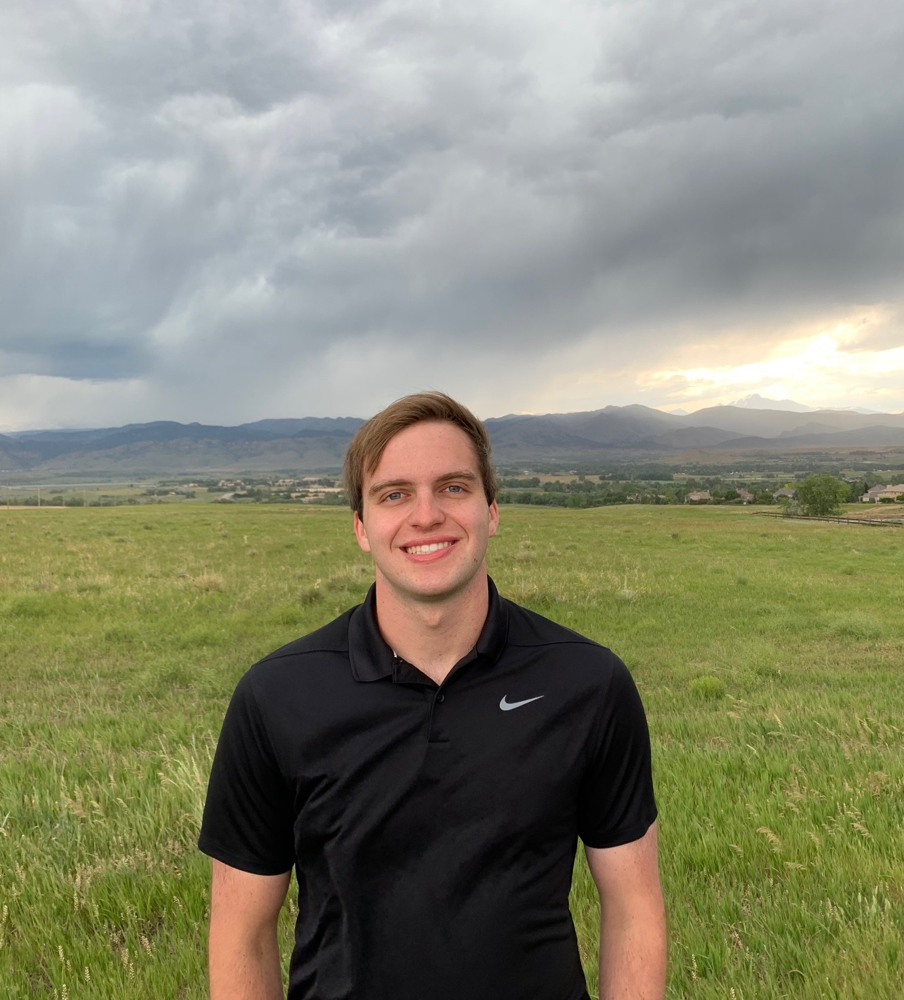

About Me

Hi!
I am a PhD student studying controls and dynamical systems at Caltech starting in Fall 2022; before that I was an undergraduate student in Computer Engineering
at Georgia Tech.
I am a maker who loves to work with robots, electronics, and embedded systems.
I began working with robots in 4th grade and haven't stopped. I have experience with robots used
in industry from working at Left Hand Robotics, and experience with robotics used in research from working in the AREAL Lab at Georgia Tech.
I recently did research on quadrotor controls and trajectory planning.
My main interests are controls and dynamics, navigation, and state estimation. I enjoy both the theoretical math as well as real-time implementation.
I want to make robots that improve the world, so I always make sure my work has real world applications and feasibility.
My resume is linked here.